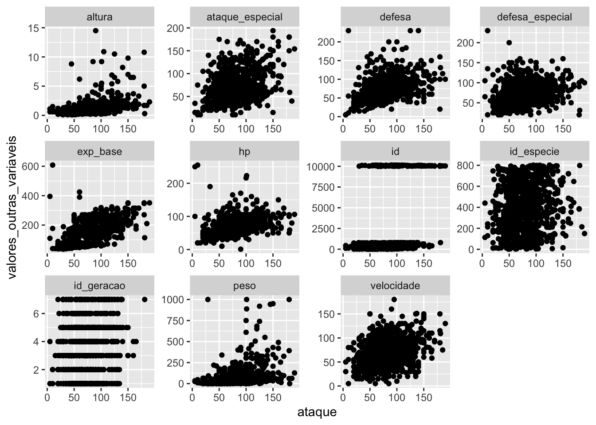
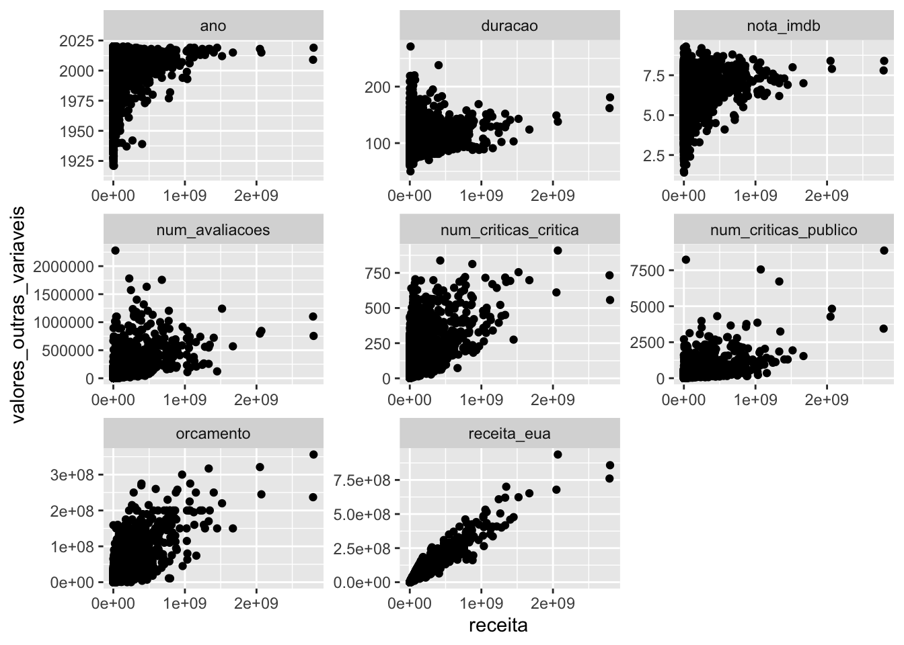

13.5 O pacote tidyr
library(dplyr)
library(tidyr)
library(ggplot2)1. Crie 5 novas colunas de idiomas na base imdb, cada uma com um dos idiomas contidos na coluna idioma. Para os filmes com menos de 5 idiomas, substitua os valores NA pela string “Inexistente”.
imdb <- readr::read_rds("imdb.rds")imdb %>%
separate(
col = idioma,
into = c("idioma1", "idioma2", "idioma3", "idioma4", "idioma5"),
sep = ","
) %>%
mutate(across(starts_with("idioma"), ~ replace_na(., "Inexistente"))) %>%
select(titulo, starts_with("idioma"))
## Warning: Expected 5 pieces. Additional pieces discarded in 37 rows [139, 1323,
## 1489, 1837, 2562, 2929, 3444, 4491, 4652, 4770, 4982, 5038, 5192, 5223, 5483,
## 5546, 6251, 6297, 6455, 6962, ...].
## Warning: Expected 5 pieces. Missing pieces filled with `NA` in 11171 rows [1, 2,
## 3, 4, 5, 6, 7, 8, 9, 10, 11, 12, 13, 14, 15, 16, 17, 18, 19, 20, ...].
## # A tibble: 11,340 × 6
## titulo idioma1 idioma2 idioma3 idioma4 idioma5
## <chr> <chr> <chr> <chr> <chr> <chr>
## 1 Broadcast News English " Spanish" " Fren… " Germ… Inexis…
## 2 Murder, He Says English "Inexisten… "Inexi… "Inexi… Inexis…
## 3 Me, Myself & Irene English " German" "Inexi… "Inexi… Inexis…
## 4 Never Give a Sucker an Even Break English "Inexisten… "Inexi… "Inexi… Inexis…
## 5 Adam & Steve English "Inexisten… "Inexi… "Inexi… Inexis…
## 6 Henry Gamble's Birthday Party English "Inexisten… "Inexi… "Inexi… Inexis…
## 7 No Way Out English " Russian" "Inexi… "Inexi… Inexis…
## 8 Welcome Home, Roscoe Jenkins English "Inexisten… "Inexi… "Inexi… Inexis…
## 9 Some Kind of Wonderful English "Inexisten… "Inexi… "Inexi… Inexis…
## 10 The Family That Preys English "Inexisten… "Inexi… "Inexi… Inexis…
## # … with 11,330 more rows2. Substitua os “????” no código abaixo para criar uma tabela do lucro médio dos filmes ao longo dos anos de 2000 a 2020, com cada ano sendo uma coluna da base.
imdb %>%
mutate(lucro = receita - orcamento) %>%
filter(ano %in% 2000:2020) %>%
group_by(ano) %>%
summarise(lucro_medio = mean(lucro, na.rm = TRUE)) %>%
pivot_wider(names_from = ano, values_from = lucro_medio)
## # A tibble: 1 × 21
## `2000` `2001` `2002` `2003` `2004` `2005` `2006` `2007` `2008` `2009` `2010`
## <dbl> <dbl> <dbl> <dbl> <dbl> <dbl> <dbl> <dbl> <dbl> <dbl> <dbl>
## 1 3.49e7 3.16e7 4.47e7 5.18e7 7.17e7 4.09e7 3.70e7 5.30e7 4.98e7 6.66e7 6.41e7
## # … with 10 more variables: `2011` <dbl>, `2012` <dbl>, `2013` <dbl>,
## # `2014` <dbl>, `2015` <dbl>, `2016` <dbl>, `2017` <dbl>, `2018` <dbl>,
## # `2019` <dbl>, `2020` <dbl>Para os exercícios 3, 4 e 5, vamos utilize a base pokemon, disponível no pacote basesCursoR.
install.packages("remotes")
remotes::install_github("curso-r/basesCursoR")
pokemon <- basesCursoR::pegar_base("pokemon")3. Utilize a função unite() para juntar as duas colunas de tipo em uma única coluna na base pokemon.
pokemon %>%
unite("tipo", c(tipo_1, tipo_2), sep = ", ", na.rm = TRUE) %>%
select(pokemon, tipo)
## # A tibble: 949 × 2
## pokemon tipo
## <chr> <chr>
## 1 bulbasaur grama, venenoso
## 2 ivysaur grama, venenoso
## 3 venusaur grama, venenoso
## 4 charmander fogo
## 5 charmeleon fogo
## 6 charizard fogo, voador
## 7 squirtle água
## 8 wartortle água
## 9 blastoise água
## 10 caterpie inseto
## # … with 939 more rows4. Utilize a função unite() para juntar as três colunas de cor em uma única coluna na base pokemon. Faça isso sem remover as 3 colunas originais.
pokemon %>%
unite("cor", c(cor_1, cor_2, cor_final), sep = ", ", na.rm = TRUE, remove = FALSE) %>%
select(pokemon, cor, cor_1, cor_2, cor_final)
## # A tibble: 949 × 5
## pokemon cor cor_1 cor_2 cor_final
## <chr> <chr> <chr> <chr> <chr>
## 1 bulbasaur #78C850, #A040A0, #81A763 #78C850 #A040A0 #81A763
## 2 ivysaur #78C850, #A040A0, #81A763 #78C850 #A040A0 #81A763
## 3 venusaur #78C850, #A040A0, #81A763 #78C850 #A040A0 #81A763
## 4 charmander #F08030 #F08030 <NA> <NA>
## 5 charmeleon #F08030 #F08030 <NA> <NA>
## 6 charizard #F08030, #A890F0, #DE835E #F08030 #A890F0 #DE835E
## 7 squirtle #6890F0 #6890F0 <NA> <NA>
## 8 wartortle #6890F0 #6890F0 <NA> <NA>
## 9 blastoise #6890F0 #6890F0 <NA> <NA>
## 10 caterpie #A8B820 #A8B820 <NA> <NA>
## # … with 939 more rows5. Utilizando a base pokemon, resolva os itens abaixo:
a. Utilize a função pivot_longer() para criar uma única coluna de tipo na base pokemon.
tipos_pokemon <- pokemon %>%
pivot_longer(cols = c(tipo_1, tipo_2), names_to = "ordem_tipo", values_to = "tipo")
select(tipos_pokemon, pokemon, ordem_tipo, tipo)
## # A tibble: 1,898 × 3
## pokemon ordem_tipo tipo
## <chr> <chr> <chr>
## 1 bulbasaur tipo_1 grama
## 2 bulbasaur tipo_2 venenoso
## 3 ivysaur tipo_1 grama
## 4 ivysaur tipo_2 venenoso
## 5 venusaur tipo_1 grama
## 6 venusaur tipo_2 venenoso
## 7 charmander tipo_1 fogo
## 8 charmander tipo_2 <NA>
## 9 charmeleon tipo_1 fogo
## 10 charmeleon tipo_2 <NA>
## # … with 1,888 more rowsb. Utilize a base criada no item (a) e escreva um código para descobrir qual o tipo mais frequente na base, independentemente se ele é primário (tipo_1) ou secundário (tipo_2).
tipos_pokemon %>%
drop_na(tipo) %>%
count(tipo, sort = TRUE) %>%
slice(1)
## # A tibble: 1 × 2
## tipo n
## <chr> <int>
## 1 água 1446. DESAFIO! Escreva uma função que receba uma base qualquer e o nome de uma coluna numérica dessa base e retorne uma figura com um gráfico de dispersão da coluna escolhida contra cada uma das outras variáveis numéricas da base.
gerar_grafico <- function(base, var) {
base %>%
select(where(is.numeric)) %>%
pivot_longer(
cols = -all_of(var),
names_to = "outras_variaveis",
values_to = "valores_outras_variaveis"
) %>%
ggplot() +
geom_point(aes(x = .data[[var]], valores_outras_variaveis)) +
facet_wrap( ~ outras_variaveis, scales = "free")
}
# exemplos de uso:
gerar_grafico(pokemon, "ataque")
## Warning: Removed 147 rows containing missing values (geom_point).
gerar_grafico(imdb, "receita")
## Warning: Removed 42502 rows containing missing values (geom_point).